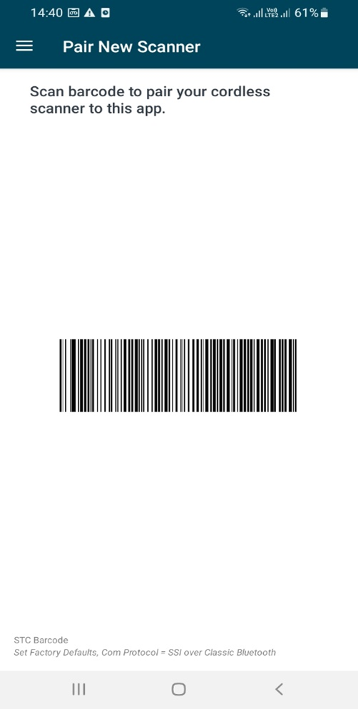
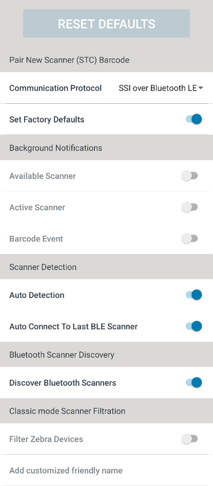
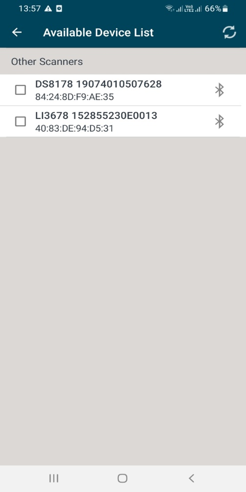
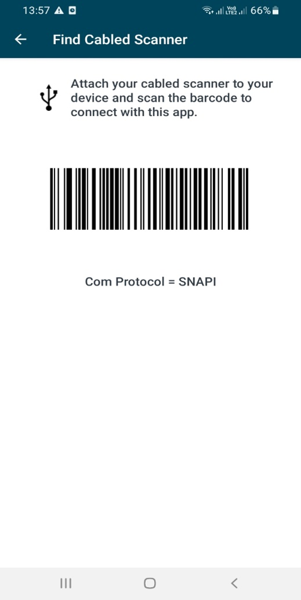

Overview
The Scanner Control application can be installed directly onto a mobile device. The following steps include general guidelines for installation. Menus and options may vary depending on the version of Android running.
Installation and Configuration
The Scanner Control application is available for download from the Google Play Store and is distributed within the SDK.
To install the demo application:
-
Previous versions (earlier than v1.0.16.0 of the Zebra Scanner Control application used a different name and branding signature and must be manually uninstalled before installing the current version of the SDK demo application.
To do this:- Go to Android Settings > Application Manager (this varies depending on the version and platform of Android running).
- Select the Android Scanner Demo App.
- Select Clear Cache and Clear Data to remove any resident demo settings.
- Select Uninstall to remove the demo application from the system.
-
Install the application using one of the following methods:
Using Google Play Store:- Go to https://play.google.com/store/apps/details?id=com.zebra.scannercontrol.app or search for Scanner Control in Google Play Store.
- Install the Scanner Control application.
Manual Installation from the SDK package:- Copy the file scanner_control_app_version.apk file included with the SDK package to the Android device.
- Navigate to the saved location and select the APK package file.
- The Android OS provides a warning that the application is from an untrusted source and requires that installation from unknown sources be enabled for this installation. This is normal. Select the option to install from unknown sources.
- The Android OS installs the application and installs a Scanner Control Application icon in the Apps menu.
- Make sure the GPS location is enabled from system settings before launching the app since it is now mandatory to have system location enabled by the app to perform under BLE mode.
Using Scanner Control Application with a Supported Device
-
There are two ways to connect a Bluetooth scanner.
-
Scan the pairing barcode. When the scanner and pairing barcode are configured correctly, scan the pairing barcode to connect.
Figure 1: Sample Application Home Screen
-
If your device has the November 2016 or later security patch you may need to click the PAIR button in the confirmation dialog that pops up in the screen.
NOTE: Due to a Google security patch, Google CVE-2020-12856, the Android device must notify users of pairing events with a popup message (prevents silent pairing).
-
Application can connect using the protocols SSI over Bluetooth Classic and SSI over Bluetooth LE. For SSI over Bluetooth Classic, Bluetooth address of the mobile device needs to be entered to continue using the app. These protocols can be found under App Settings.
 Figure 2: Sample Application Main Menu
Figure 2: Sample Application Main Menu
Figure 3: App Settings
 Figure 4: Device Bluetooth Address
Figure 4: Device Bluetooth Address
OR
- Pair the scanner manually. To pair the scanner manually, refer to the appropriate Product Reference Guide, User Guide, or Integration Guide for instructions on how to pair the specific device.
-
-
When paired, the scanner gets displayed in the Available Device List. If the selected communication protocol (App Settings → Communication Protocol) is SSI over Bluetooth Classic and Zebra Device filtration (App Settings → Classic mode Scanner Filtration → Filter Zebra Devices) is enabled, Available Device List will only display Zebra devices.
Figure 5: Available Scanners List
-
If using a USB scanner:
- Configure its USB host mode to SNAPI.
- Connect it to the Android device.
- The scanner appears in the Available Device List. OR
-
Select Find Cabled Scanner from the menu to display the SNAPI bar code.
Figure 6: Sample Application Main Menu
-
If there is a single scanner to connect, the application connects to the scanner automatically. If there are no SNAPI scanners connected, the application displays the SNAPI barcode to scan to connect.
Figure 7: Find Cabled Scanner
- If multiple USB SNAPI scanners are available, the application displays the available scanner list from which the user can select the appropriate scanner for the application to connect.
- It may be necessary for the user to give the Android operating system permission to access the USB device. Should a permissions message display, select OK.
-
When a device is selected in the Available Device List, the application attempts to connect to the scanner. When the connection is made, following screen is displayed.
 Figure 8: Active Scanner
Figure 8: Active Scanner
Features Supported in Scanner Control App
- Display bar code data within a tablet / phone application.
-
Apps using the SDK can command and control the scanner.
- LED and Beeper Control.
- Aim Control.
- Enable/disable Symbologies.
-
Scanner control,
- Remote scanner trigger (i.e. Host app-initiated triggering).
- Enable/disable scanning.
-
Event notification,
- Scanner available / unavailable.
- Scanner connected / disconnected from host.
- Bar code data transmission (i.e. host gets event stating barcode has been scanned).
- Automatic reconnection to last connected scanner (i.e. scanner goes out range and then returns).
- Enable/Disable the pager vibrating motor.
- Device Configuration (Get, Set and Store Scanner attributes).
-
Asset tracking,
- Model number
- Serial number
- Date of manufacture
- Firmware
- Simplified pairing using Scan-To-Connect technology.
- Displays battery statistics for select cordless scanners.
- Enables image and video capture.
- Update scanner firmware.
-
Scale functionality,
- Scale enable/disable.
- Zero scale.
- Reset scale.
- Read weight.
- Virtual Tether Functionality.
- Zebra Scanner filtration in classic mode.
- Auto connection to the last connected scanner on app relaunch with Bluetooth Low Energy mode.
Users new to Scanner SDK for Android can follow the video below to understand the basics of Scanner Control App.